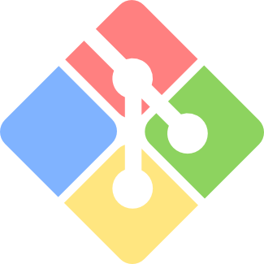

About Me
I was first introduced to coding through conducting social science research and working with statistical programs like Stata and R. Right away, I knew that I wanted to pursue a career involving programming. I love the problem solving aspects of coding and the process of working through challenging puzzles to get to a working solution. In particular, I'm drawn to full stack web development because I love combining disperate libraries and frameworks to implement an idea and create a functional, aesthetically pleasing final product. Through working in reproductive health research for three years, I have honed my skills in data management/analysis and programming more broadly. I have built a full-stack clone of Tumblr using Ruby on Rails, postgreSQL, and React/Redux. I made a turn-based game using Javascript and HTML5 Canvas.
Technical Skills


- 